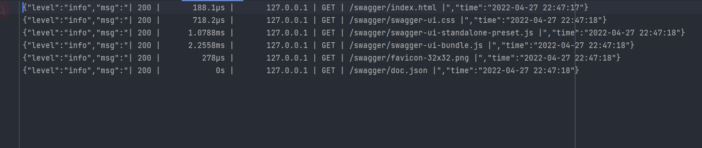

1. 第六章 日志介绍以及工具推荐
当项目部署到服务器上运行时，很有可能出现后端在某次服务中出现了问题。但是我们若不是用户告知恐怕很难发现这个错误。这时便需要日志的出场了。由日志为我们记下访问的信息以供后续调试。
当然Gin自带了Logger可以在控制台上输出一些访问以及异常记录。当运行后便后下图所示结果

但是其只能显示在shell中却不能记录下来。而本例中将会使用Logrus来作为中间件记录日志。
在middleware/logrus.go 中添加如下代码，并使用此中间件，
即在router/router.go 中添加r.Use(middleware.LoggerToFile())
func LoggerToFile() gin.HandlerFunc {
logFilePath := global.VP.GetString("root_path")
logFileName := "demo.log"
//日志文件
fileName := path.Join(logFilePath, logFileName)
//写入文件
src, err := os.OpenFile(fileName, os.O_WRONLY|os.O_CREATE|os.O_APPEND|os.O_SYNC, 0666)
if err != nil {
fmt.Println("err", err)
}
//实例化
logger := logrus.New()
//设置输出
logger.Out = src
//设置日志级别
logger.SetLevel(logrus.DebugLevel)
//设置日志格式
logger.SetFormatter(&logrus.JSONFormatter{
TimestampFormat:"2006-01-02 15:04:05",
})
return func(c *gin.Context) {
// 开始时间
startTime := time.Now()
// 处理请求
c.Next()
// 结束时间
endTime := time.Now()
// 执行时间
latencyTime := endTime.Sub(startTime)
// 请求方式
reqMethod := c.Request.Method
// 请求路由
reqUri := c.Request.RequestURI
// 状态码
statusCode := c.Writer.Status()
// 请求IP
clientIP := c.ClientIP()
// 日志格式
logger.Infof("| %3d | %13v | %15s | %s | %s |",
statusCode,
latencyTime,
clientIP,
reqMethod,
reqUri,
)
}
}
// https://github.com/xinliangnote/go-gin-api
为了方便使用者读取我将其改为了json格式，随后访问swagger界面，可在demo.log见到如下日志

随后我又根据参考在log上更改了一些，具体请见Gin-Demo/middleware/logrus.go 中。
不过由于使用了gin.Default() 导致目前无法捕获异常放置到日志中，而是随着默认Recovery输出到了终端上。后续会介绍如何使用中间件捕获异常。